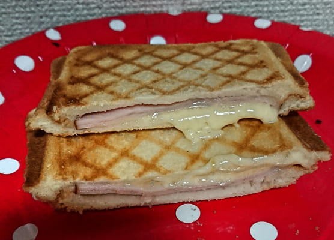
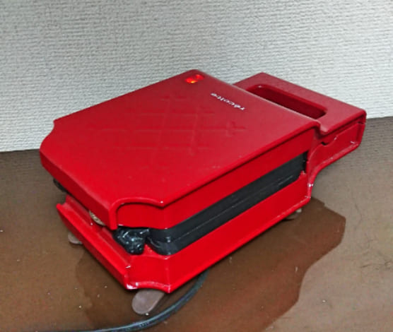
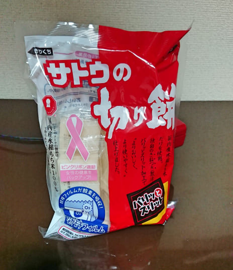
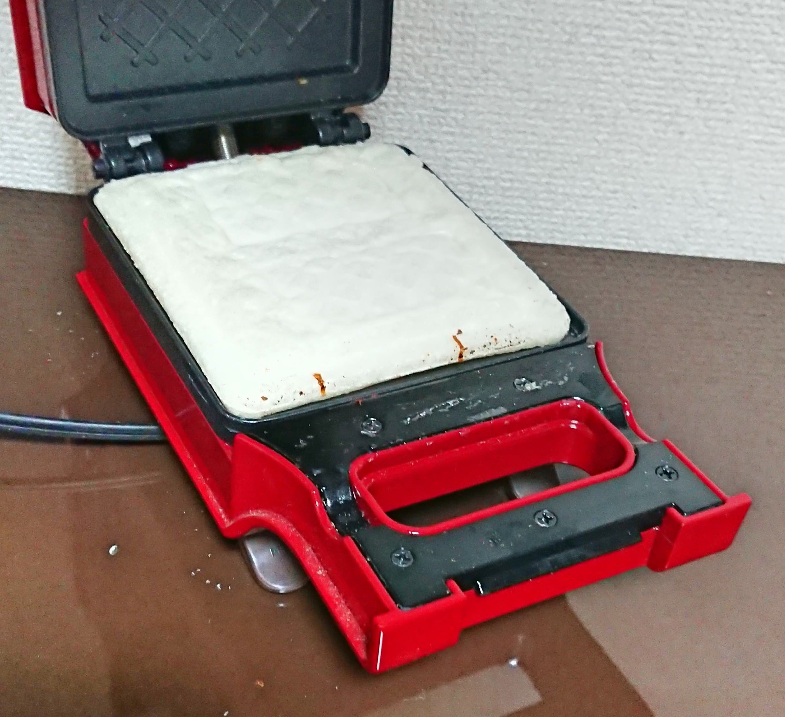

手軽でおいしいですよ。
ホットサンドメーカー使ってますか？
簡単に短時間でサクサクでこんがり焼けたホットサンドができて便利ですよ。
よく作るのは定番のハムチーズ入り。
熱々のパンからとろけて出てくるチーズがたまらないですね。
パンがプレスされカリカリになっているため食感がサクサクと心地よいです。
他にポテトサラダやツナマヨキャベツ、ベーコンエッグなど定番の味はどれもおいしくおすすめです。
卵系のホットサンドは生卵をそのままのせて作れるので手軽に作りたい方にはぴったりですね。
ただ、ホットサンドメーカーはホットサンドを作れるだけではないのです。
お餅を焼くことができるのです。
ホットサンドメーカーを使って焼くお餅、気になりますよね。
作っているところと食べた感想を見ていってください。
使っているホットサンドメーカーは「レコルト プレスサンドメーカー」です。
食パンの場合耳まで丸ごとホットサンドにできるタイプです。
特徴としてはコンセントをさすだけで暖まりはじめ、焼いていいかどうかをランプで教えてくれます。
電源が入ってから1～2分ほどで焼くことが可能になります。
お餅はこれ。どこにでもありそうな切り餅ですね。
暖まったら、お餅を置いて蓋を閉じてプレスします。
5分後蓋を開けてみると、こんがり焼けていますね。
焼き色がおいしそうです。
ホットサンドメーカーにお餅がくっつかないのでご安心を。
今回は醤油と海苔でいただきました。
外がぱりぱり、中はもちもちでおいしいです。
オーブントースターをを持っていなくても手軽に焼き餅が作れるのはよいですね。
お餅の間に餡子を挟んで焼いてもおいしいですよ。
簡単にホットサンドもお餅も作れるので食べすぎには注意してください。